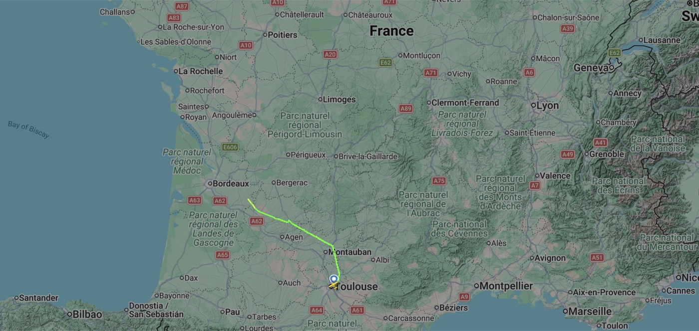
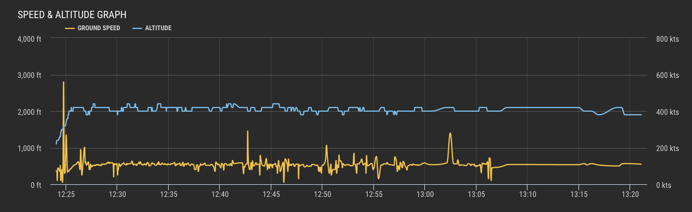

✈
Étape 1
Toulouse → Oléron
Bien arrivé à Oléron. Suis passé derrière une patrouille d'Air Tractor, ai assisté à deux feux, avion parfait, turbulent, pas d'entrée maritime. Over.
Victor
Trajectoire & données de vol

